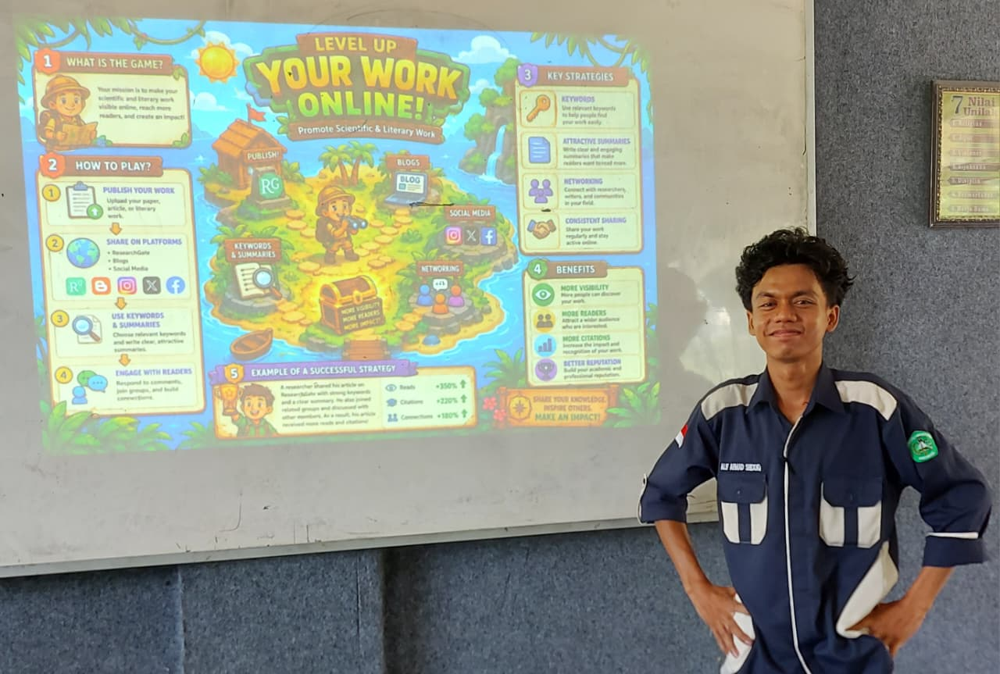
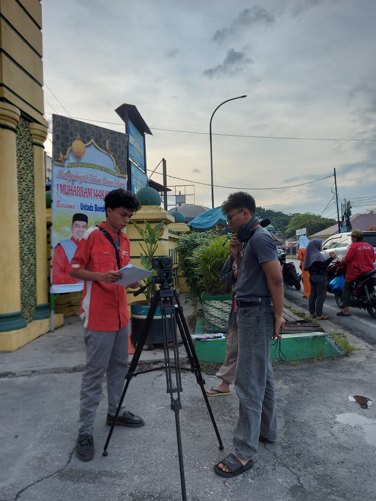
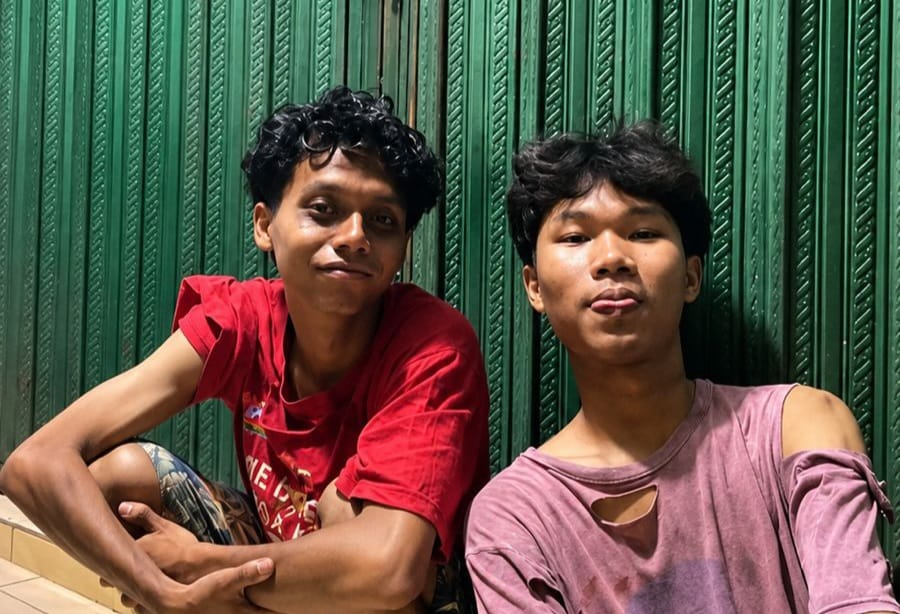
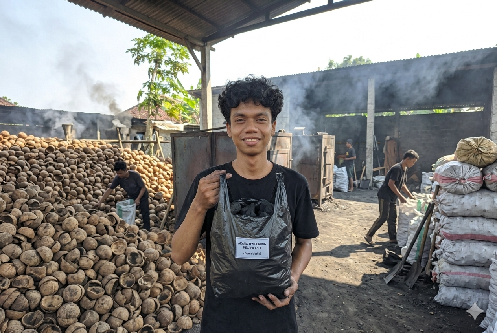
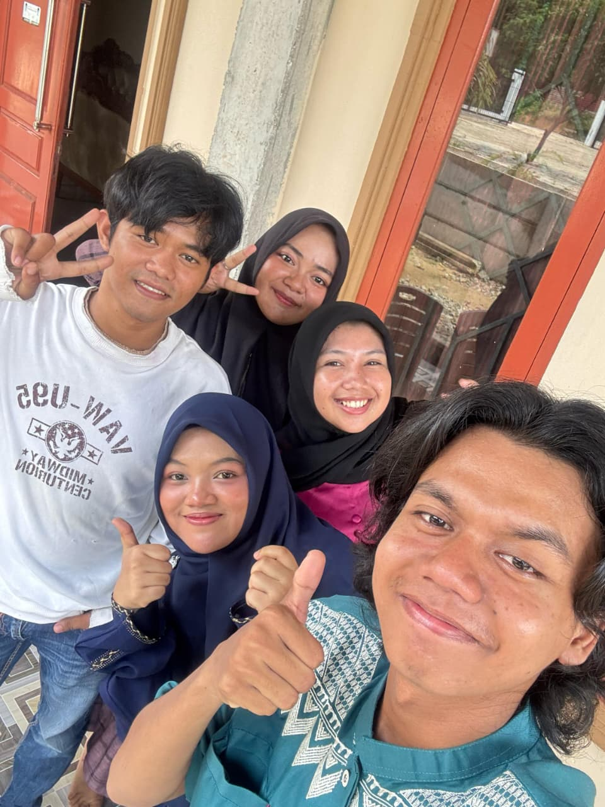

An English Education Student, Creative Visual Creator, Actor, and Entrepreneur based in Pekanbaru, Indonesia.
I am a second-semester English Education student at Universitas Lancang Kuning. Beyond my academic pursuits, I thrive in dynamic, hands-on environments—ranging from retail operations and store management to the creative world of acting and local entrepreneurship. I love telling stories, whether it's through a visual infographic, a film character, or building a sustainable business.
"Education is not just about classrooms; it's about storytelling, leadership, and creating real-world impact."

Designing engaging visual layouts and infographical posters to transform complex data into easily digestible and impactful academic presentations.


Serving as the lead actor in an upcoming social-drama film exploring the dark realities of online gambling and illegal loans, showcasing a wide emotional range and dedication to storytelling.

Managing a sustainable manufacturing business initiated during high school, which has been active for over 5 years with a focus on waste management, local operations, and entrepreneurship.
2025 - Present
English Education (GPA: 3.93)
Professional Skills: Customer Service, Retail Sales, Store Operations, Product Marketing, Basic Technical Troubleshooting.
Languages: English, Indonesian, Arabic.
Diyanna Thrift Store | Sep 2024 – Jun 2025
Managed thrift store operations, sales, and inventory independently.
PT. Surya Citra Abadi | Jan 2024 – Aug 2024
Handled technical troubleshooting for household appliances and managed debt collection communications.
Delima Second Branded | Sep 2022 – Dec 2023
Managed online and offline sales for second-hand footwear and customer service.
Alif is sharing updates about his latest visual projects, film production behind-the-scenes, and entrepreneurial journey on Instagram. Follow the instagram and stay connected!
GO TO INSTAGRAM ↗